A gallery of multiplexer, geneplexer, and rembot images. The RAMFISH (Rapid Amplified Multiplexed FISH) automation platform is a custom-engineered robotics suite designed to scale high-resolution spatial mRNA profiling. Operating in a continuous, closed-loop cycle, the system utilizes a precision Multiplexer for automated cyclic probe labeling and fluidic delivery. Following high-resolution confocal imaging, samples are processed by the RemBot, a dedicated signal-removal robot that efficiently clears fluorescence to prepare the tissue for subsequent multiplexing rounds. By integrating custom microcontrollers and modular fluidics, this platform significantly streamlines complex spatial biology workflows.
The RAM-FISH platform is powered by a robust, end-to-end computational pipeline. The software suite sequentially handles raw imaging data through signal normalization and background suppression using Gaussian blur. It seamlessly progresses through rough alignment, managing rotation, XY translation, and flips before executing precise affine and B-spline fine alignments between reference and target images. The pipeline concludes with highly accurate LoG-based single-spot counting, ultimately generating a comprehensive, multiplexed RNA profile.
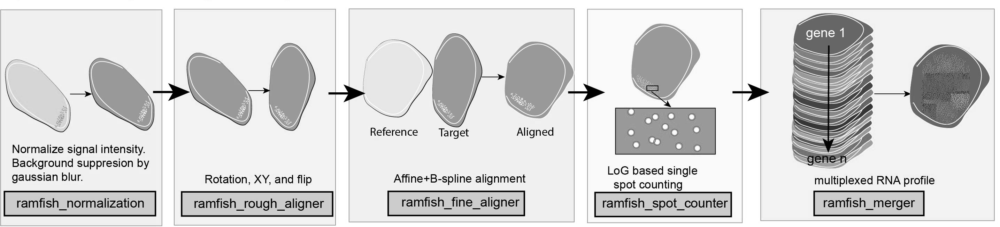
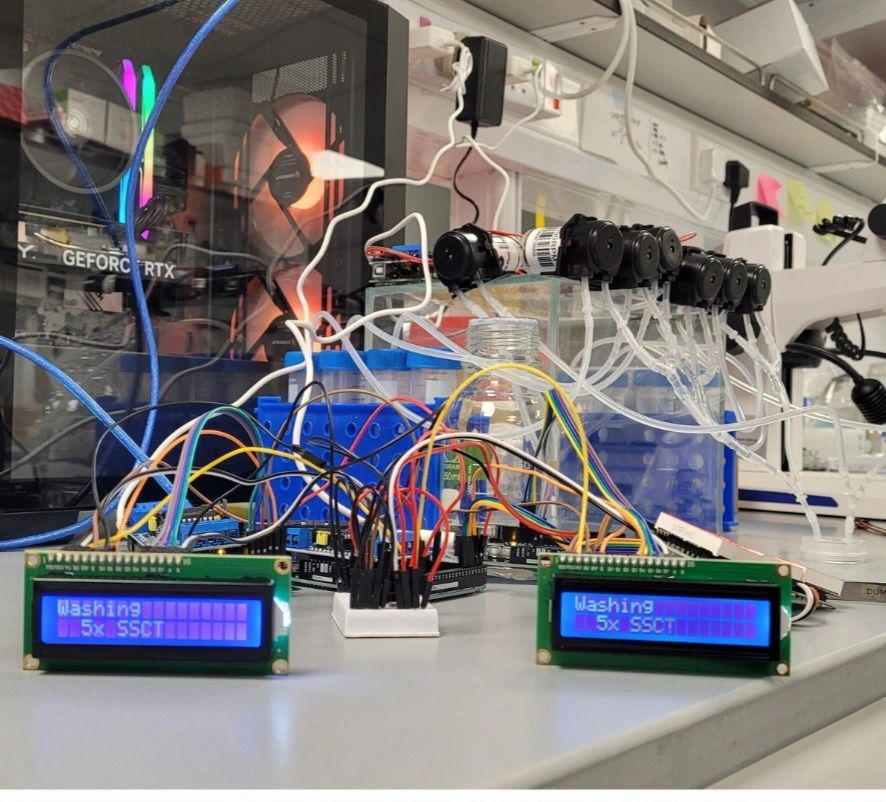
Electronics of the i2c displays
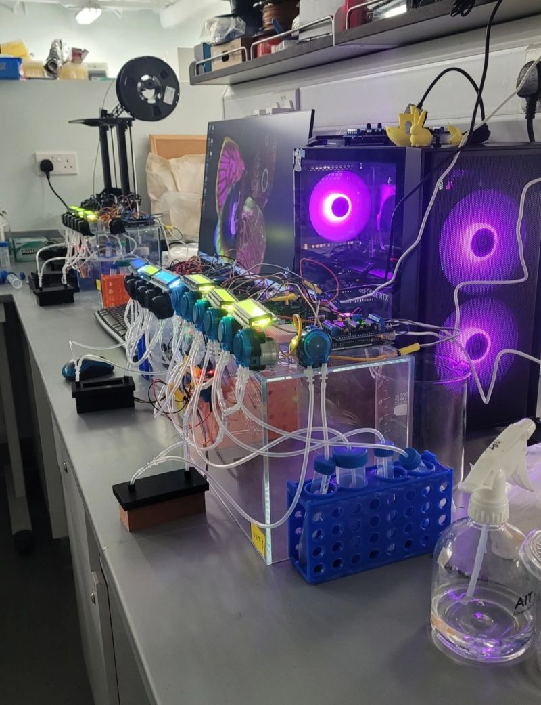
Prototype 2, 3, and 4 under operation at NUS.
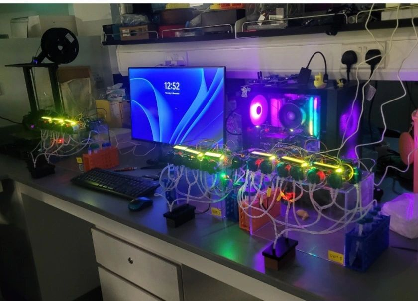
Prototype 2, 3, and 4 under operation at NUS.
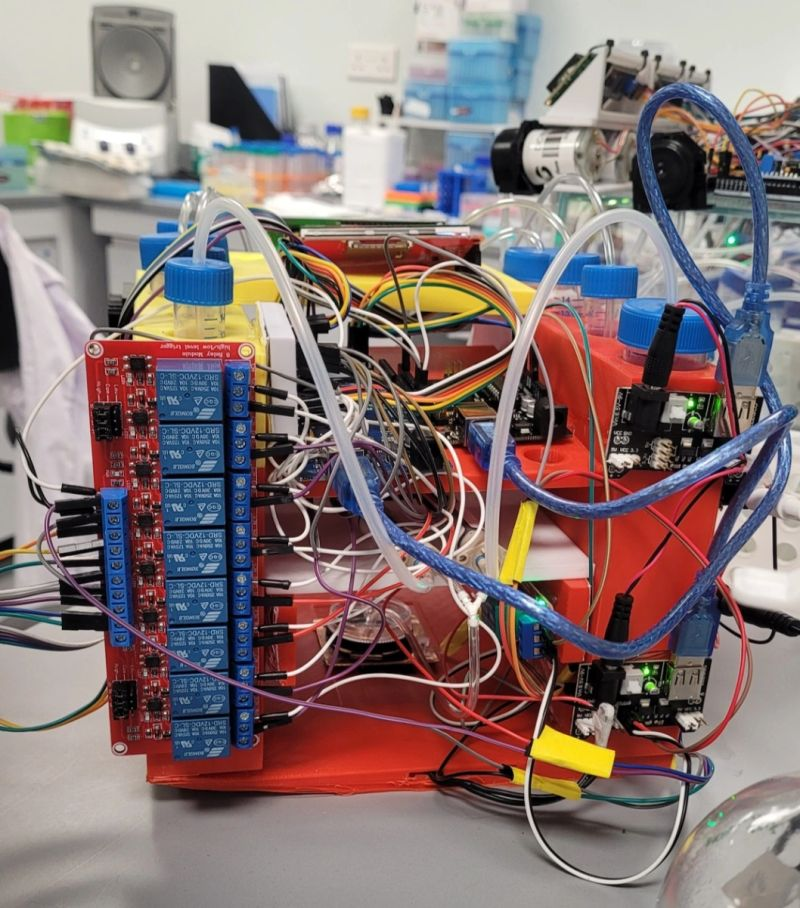
Electronics of prototype 4.
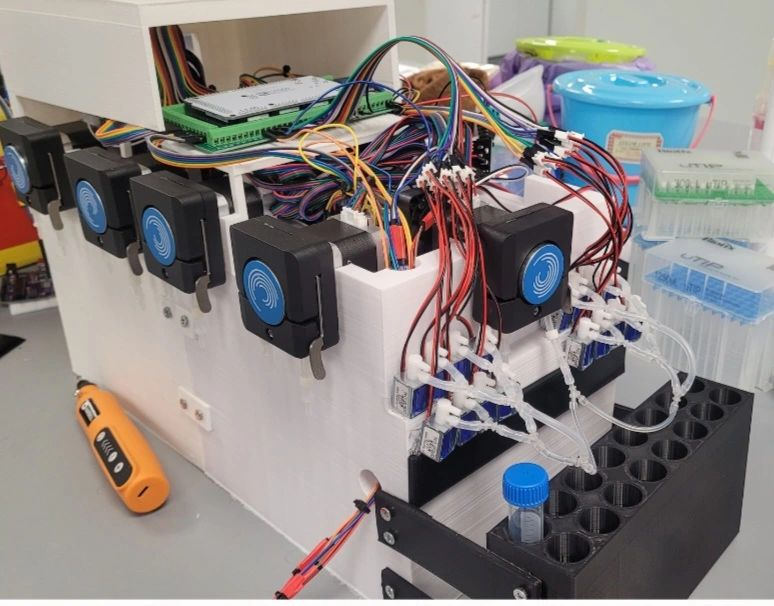
Electronics of prototype 5.
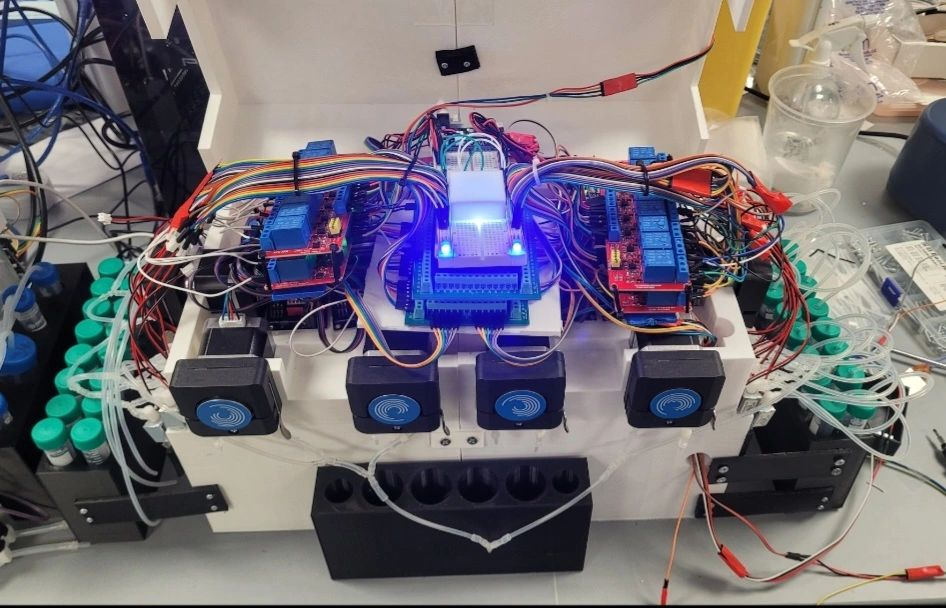
Electronics of prototype 5.
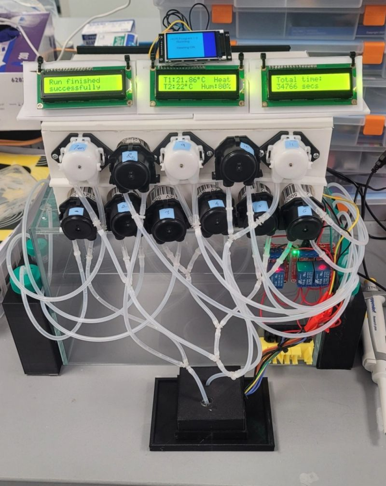
Prototype 6 in action.
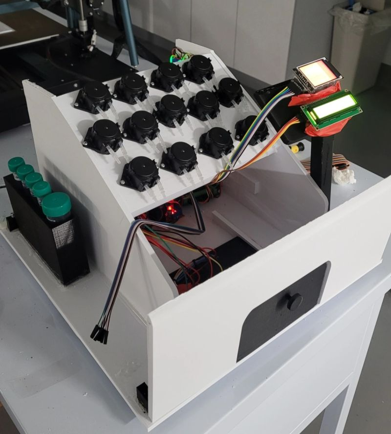
Prototype x under preparation.
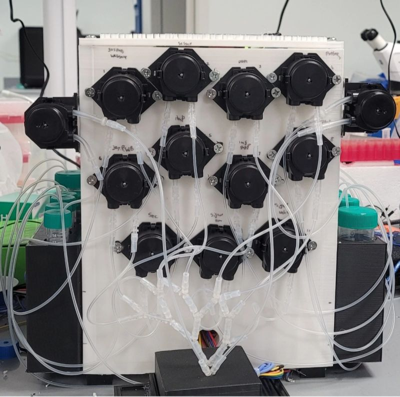
Prototype 7 in operation.
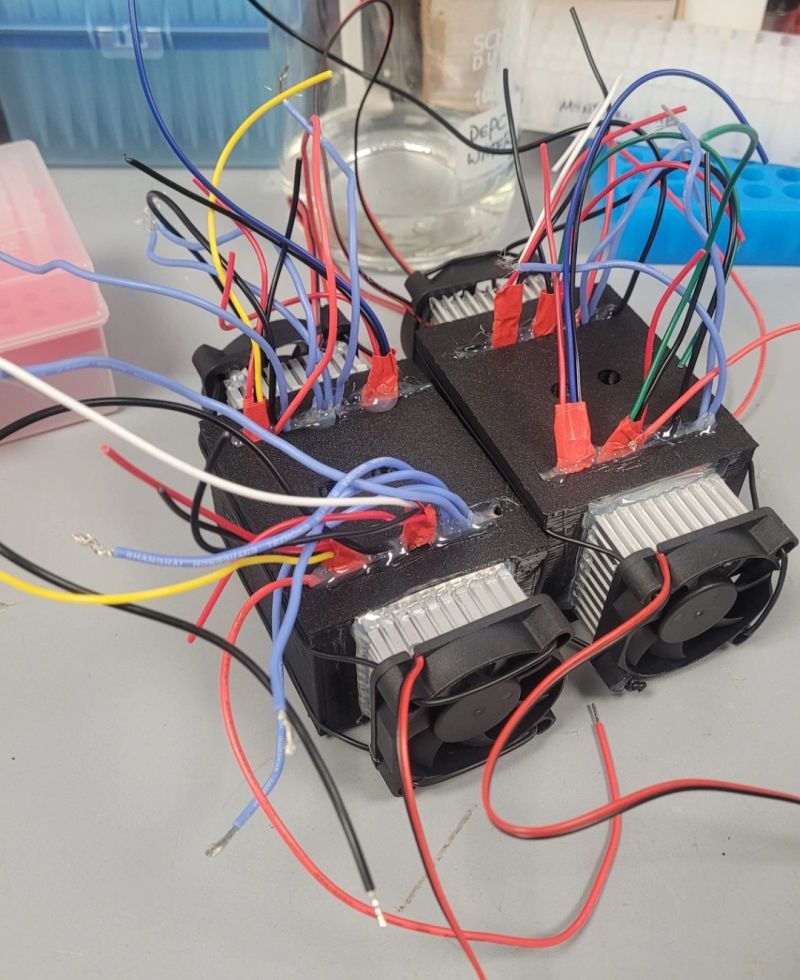
Arc chambe modules
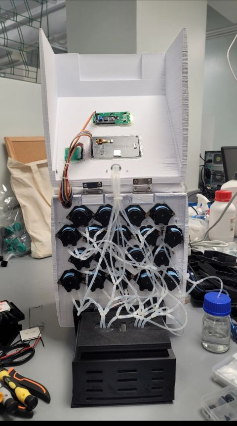
Tubing of multiplexer prototype 8.
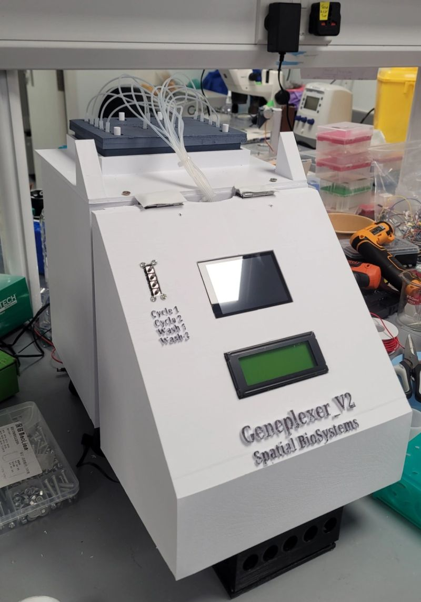
A fully assembled geneplexer_v2 system.
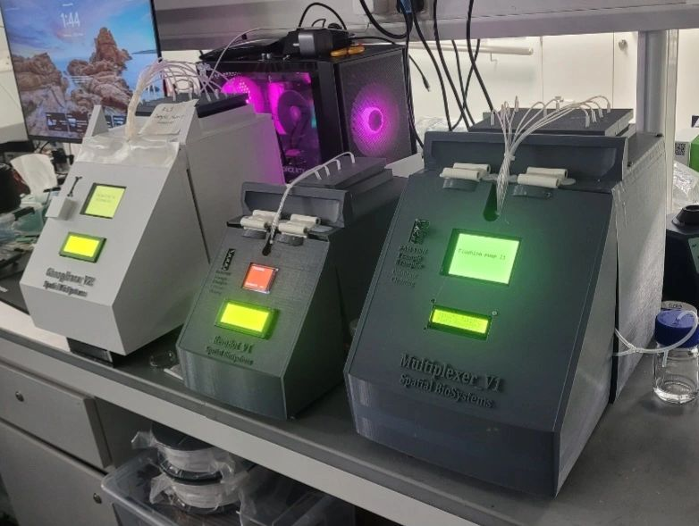
A geneplexer_v2, rembot_V1, and multiplexer_v1 in operation at NUS.